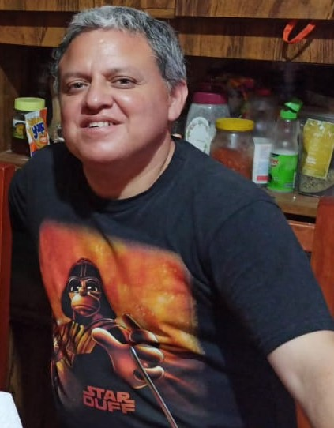

I wish to help you with anything I have learned that may be useful to you
This site is intended to people who like technology and programming and also anyone who likes to know what I have done at BYU-Idaho through BYU PathWay WorldWide
I like subjects and courses about programming, economy and business
I like to create applications for computers
I like very much to be an online student at BYU Idaho, because it is the first time I attend a Church educational institution
I consider web design very important as it implements computer advantages to business management and almost everything, so I think it will help me to make a contribution to the world in the near future
I have been a member of the Church all my life, I like the Scriptures and Hymns, and also the declarations of leaders of the Church, especially from Pt Russell M Nelson about the joy that we experiment in life proceed from the focuss of our lives, more than the circumstances of it
I send my best wishes to all of you